Capítulo 5. Circuitos Neumáticos
Ejercicios Construyendo circuitos básicos
Construir el siguiente circuito neumático.
Accionar un cilindro de simple efecto con retorno de muelle, con una válvula 3/2 de accionamiento manual con retorno de muelle.
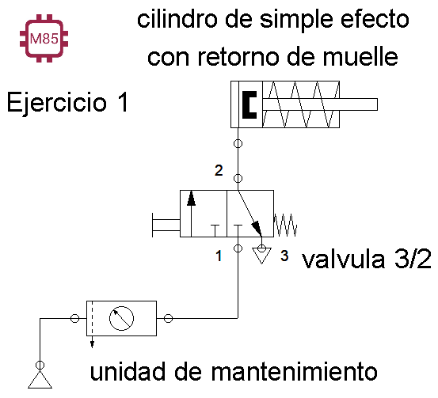
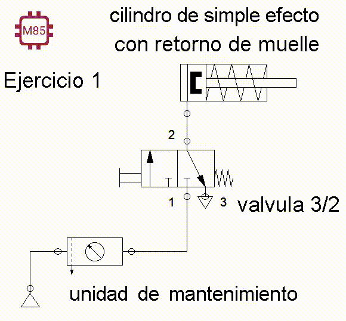
Tipos de accionamientos
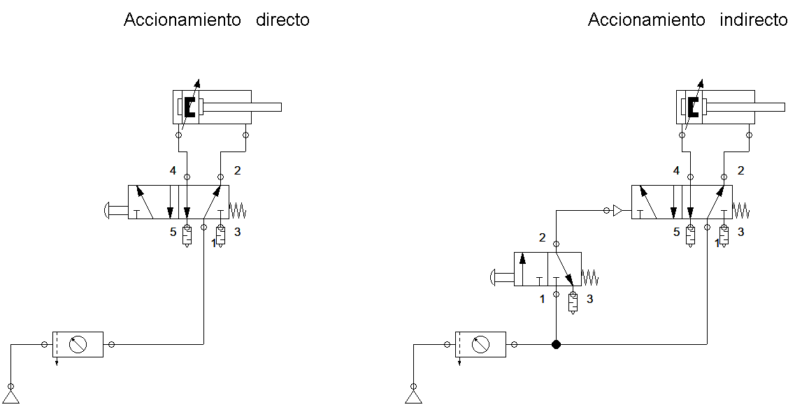
Accionamiento directo
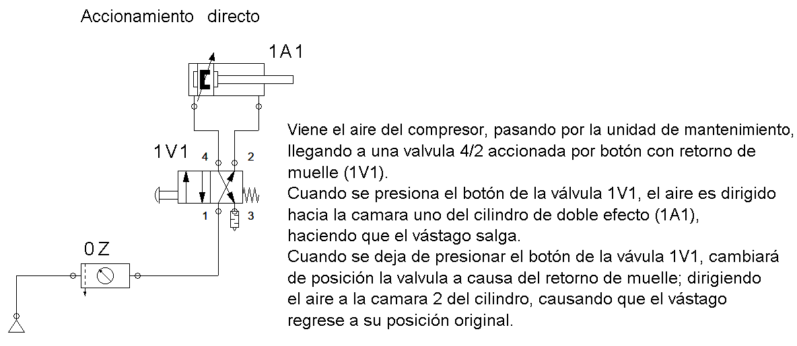
Accionamiento indirecto
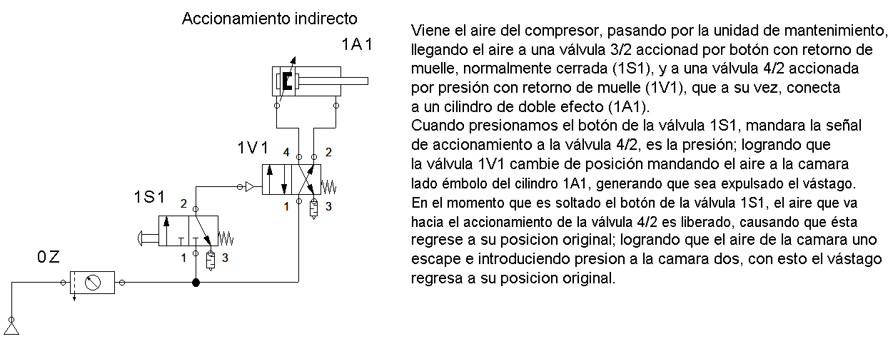
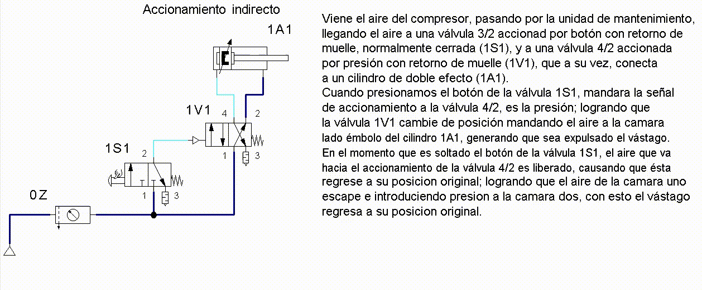
!!! note El accionamiento correcto es el control indirecto, dado que es el más seguro para el usuario ante cualquier falla o contingencia.
Ejercicios
Ejercicio 1
Control de cilindro de simple efecto con válvula de 3/2 monoestable accionada de forma manual (pedal), normalmente cerrada. Accionamiento directo.
Ejercicio 2
Control de un cilindro de simple efecto con retorno de muelle, gobernado por una válvula de presión con retorno de muelle; las válvulas de control restantes son a elección propia del ingeniero (Es con control indirecto).
Solución:
Ejercicio 3
Control de un cilindro de simple efecto con retorno de muelle, gobernado por una válvula de presión biestable, las válvulas de control restantes son a elección propia del ingeniero.
Solución
Nomenclatura de circuitos neumáticos
Ejercicio 4
Reproducir el siguiente diagrama y describir su funcionamiento
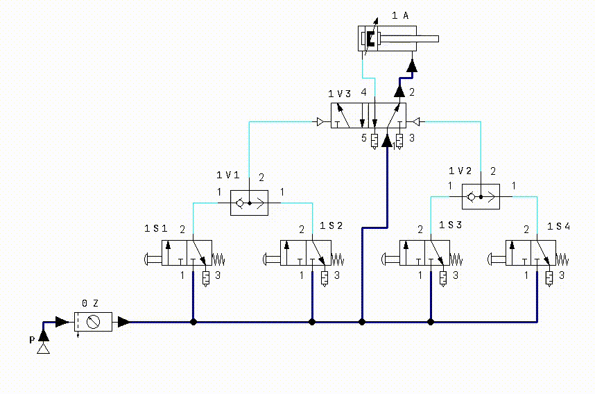
Ejercicio 5
Control de un cilindro de simple efecto por medio de una válvula OR, por medio de dos válvulas manuales.
Ejercicio 6
Control de un cilindro de simple efecto por medio de una válvula AND, por medio de dos válvulas manuales.
Accionamiento por rodillo
Controlar un cilindro de doble efecto, activado por una valvular accionada por botón con retorno por muelle, al ser accionado debe expulsar el vástago; contará con un final de carrera que al tocar el vástago hará que se retraiga y regrese a su posición inicial.
Presentación y configuración por accionamiento de rodillo:
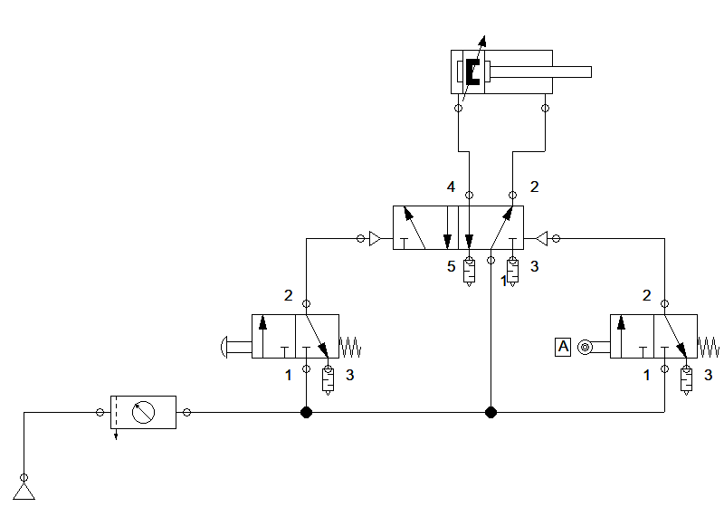
Configuración de la válvula por rodillo y cilindro
Primero damos doble click sobre el rodillo o el cilindro
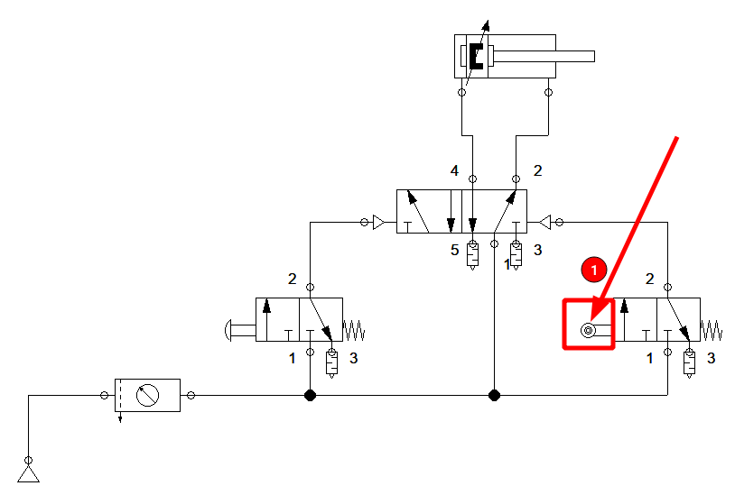
Si damos doble click sobre el rodillo, nos saldrá esta ventana donde colocamos la referencia que nos servirá para identificarlo. Por convención, se usa A, B, C,...
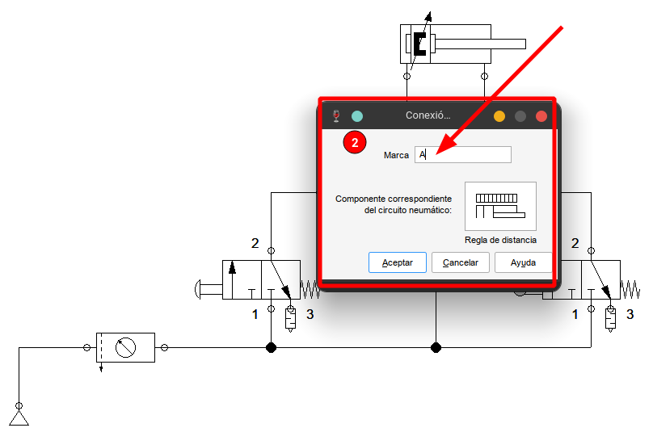
Damos Aceptar, y nos quedara la referencia del rodillo.
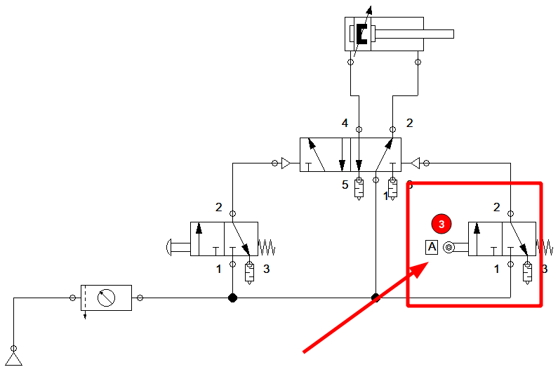
Ahora, si damos doble click sobre el cilindro, nos saldrá la siguiente ventana y nos vamos a la pestaña "Etiquetas de accionamiento".
En esta sección debemos agregar la marca que se vinculara con el rodillo o sensor
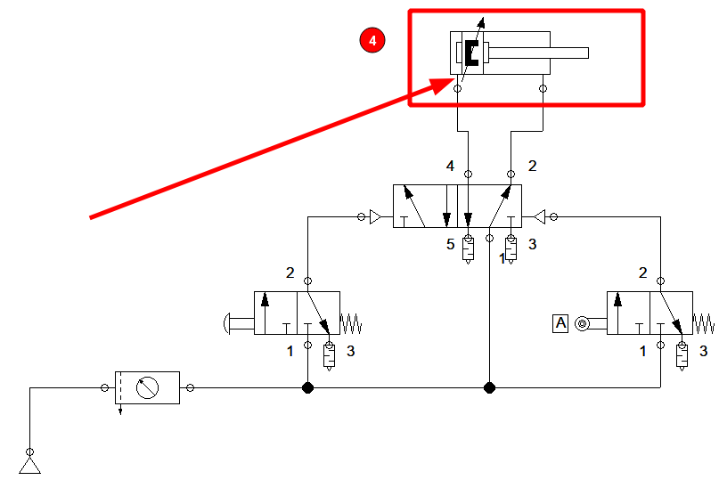
Se coloca la marca "A" y en la posición que queremos que exista el sensor o que se accione, en este caso solo queremos que este unicamente al final del cilindro.
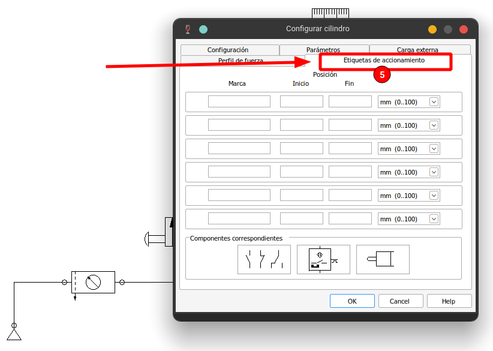
Aceptamos, y nos quedara la marca sobre el cilindro, dependiendo de donde lo hayamos configurado.
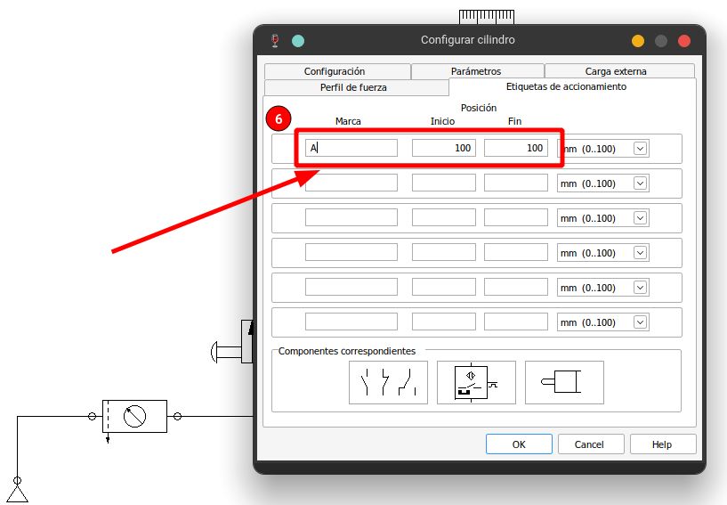
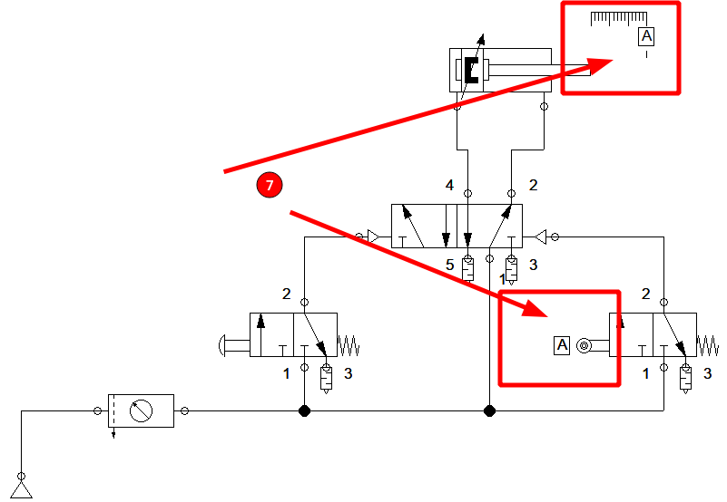
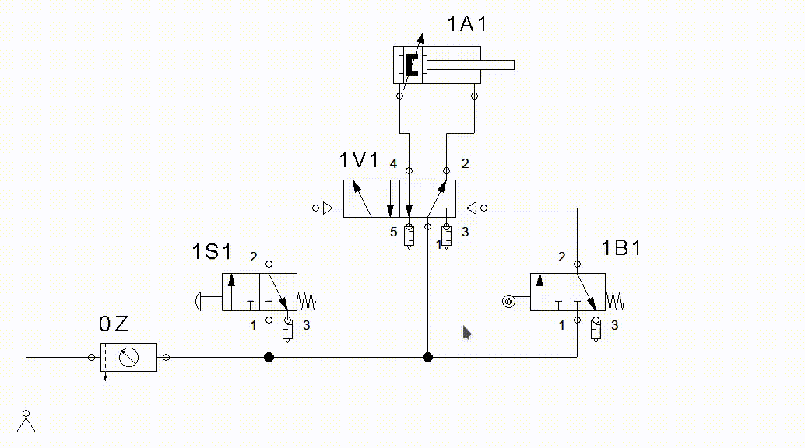
Ejercicio 7
Se debe controlar un cilindro de doble efecto, por medio de un botón, Y al mismo tiempo debe estar presionado una válvula por rodillo. El vástago del cilindro regresa cuando se presiona otro botón.
Solución:

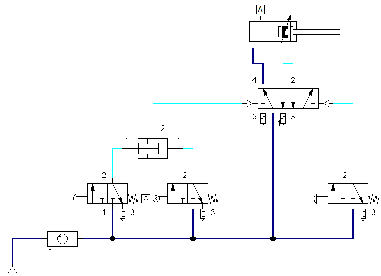
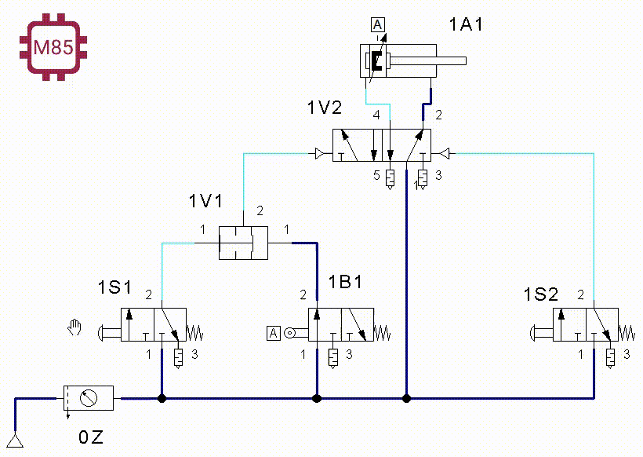
Circuito A+ B+ A- B-
Se debe accionar una válvula de manera manual para hacer salir el vástago del cilindro de doble efecto 1, cuando éste al 100% deber hacer salir el vástago del cilindro de doble efecto 2, cuando éste vástago este al 100% debe hacer regresar al vástago del cilindro de doble efecto 1 y el cilindro de doble efecto 2.
Circuitos en cascada
Circuito A+ B+ B- A- (Escamoteable)
Limites 95 y 5

Control de salida del vástago
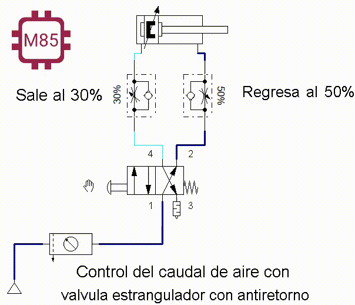
Ejercicio 8
Control de cilindro de simple efecto con válvula de 3/2 monoestable, accionada de forma manual (accionamiento indirecto), el vástago debe salir de forma suave.
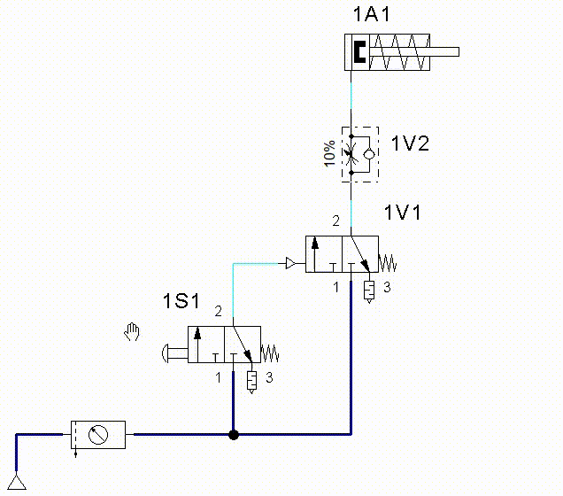
Ejercicio 9
Control de un cilindro de doble efecto por medio de una válvula 5/2, el control es con una válvula con palanca de enclavamiento, con válvula de estrangulamiento con antirretorno para que salga (70%) y entre el vástago de forma suave (30%).

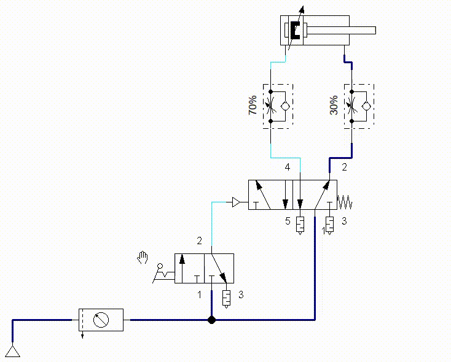
Aplicaciones - Ejercicios
Control de puerta de un autobús
El control de apertura y cierre de la puerta de un autobús es llevada a cabo por el chofer que acciona un botón para abrirla y otro botón para cerrarla. Pero para que este sistema funcione el autobus debe estar detenido, es decir, se debe estar presionando el freno (accionamiento por rodillo). Ademas, por fuera, debe existir un botón de enclavamiento (accionamiento por bloqueo con retorno de muelle), el cual debe abrir la puerta del autobus. La entrada y salida del vástago es lenta, a un 50% en su cierre y a un 30% su apertura.
Elevador Simple
Tenemos un elevador, el cual se controla por medio de dos pulsadores, con uno podemos subir la plataforma (PS), y con el otro podemos bajar la plataforma (PB). Realiza un circuito neumático para el control, estos pulsadores esta en la parte inferior donde el operador realiza el control.

Elevador (completo)
Ahora el elevador tiene doble control, es decir, cuenta con 4 botones para hacerlo funcionar. Tenemos 2 botones dentro del cajon que sube y en la parte inferior de la plataforma. 2 botones para subir, uno arriba y otro abajo, otros 2 para subir, arriba y abajo.
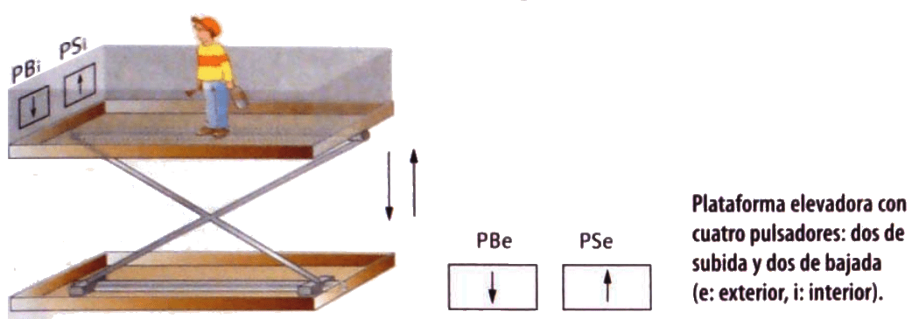

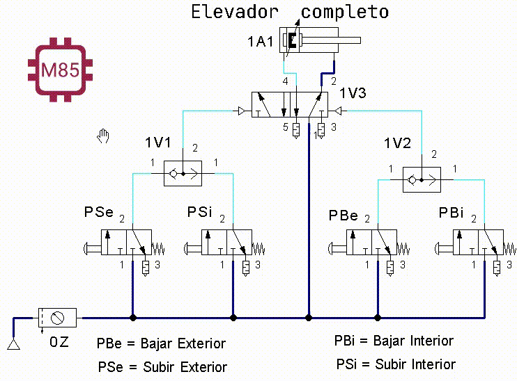`
Papas a la francesa
Se debe realizar un circuito neumático para el control del cortador de papas. Para que este funcione se deben cumplir 2 condiciones, con el pie el usuario lo debe activar y en la parte superior debe haber un botón, cuando ambos estén accionados, también para que el cilindro salga debe estar en su posición inicial (cero) para que la maquina comienza a operar; es decir, saldrá el vástago del cilindro. Cuando el vástago llegue al final de la carrera debe regresar en automático. De protección, se debe colocar una válvula principal para detener el flujo de aire del sistema.

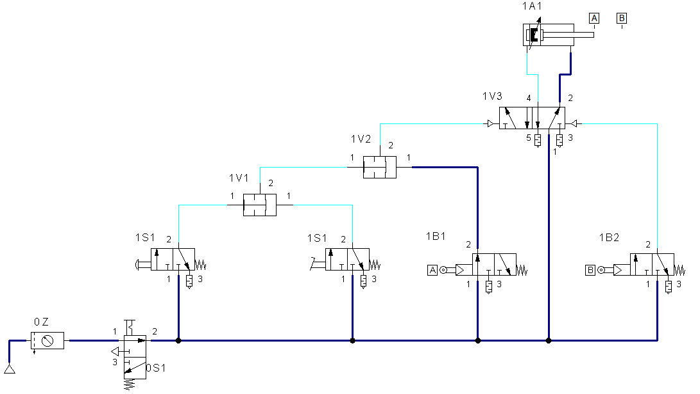
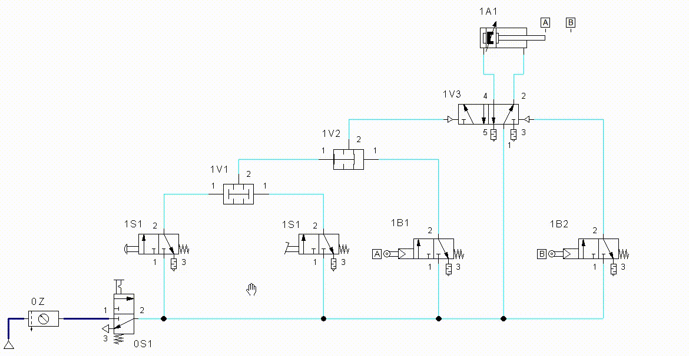`